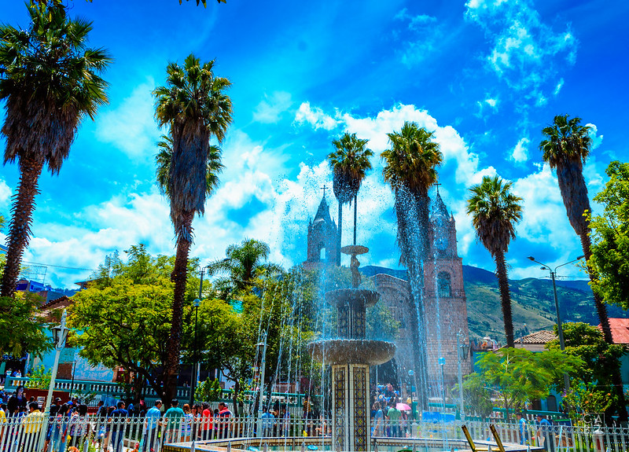
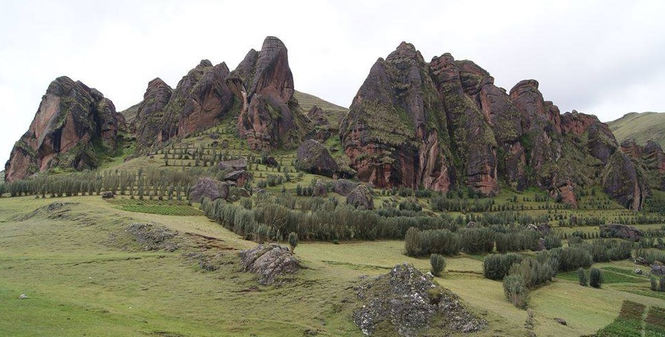
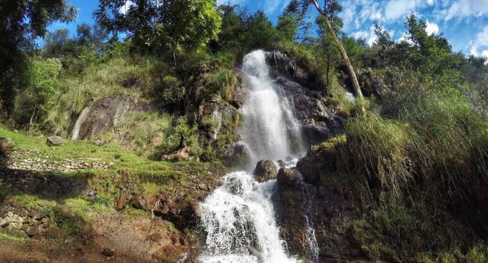

Para empezar el recorrido debemos empezar por su plaza de armas, un espacio lleno de magia y de personas bastante trabajadores. Puedes ir a conocer muchos lugares, ya que Huanta es muy atractivo.
Otra de las opciones sería el Bosque de Piedra de Laupay, se encuentra a 3 horas de la ciudad y tampoco te puedes quejar. Mira nada más esta belleza de bosque.
Aun que también tenemos la Catarata de Occochaca, se encuentra a 20 minutos del centro de la ciudad. Siendo un lugar bastante conocido, para entrar solo debes pargar s/1.00. Ahí puedes conectar con la naturaleza y relajarte.
 Volver